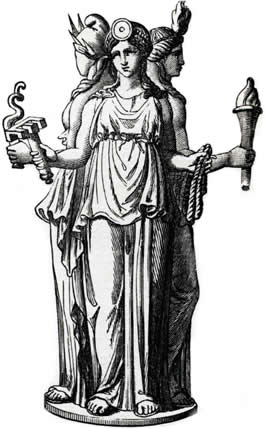

(I just stumbled across it in the final
sentence of the vol.
2, that
was a grey text you had to read)
We don't know in what language these
structures appeared, so any language will do. They're all
synonyms across languages, so some words forgotten in one
languages still live in another.
don't be surprised on following rawness, for I research it as
I write.
This revelation of three mothers
being
birth (бог?) - man (me) - w looks like ש and ת could be z,
though this similarity is probably caused by common
similarity of alphabetic lines.
If it's M & W is it man & woman? because I wanted to
speak of Man & Wile (Ewil.. so Eve it is. I told you
Deva & Eva are Devil & Evil. It's all yin/yang.)
Бог, Мэн, Уоман - такие же три первых настоящих персонажа в
библии? Я снова возвращаюсь к библии. Хаха, я начал с Сейфер
Йециры, Ш юю...
allows us to say that א is not soil, but air, as Sepher
Yetzirah said. Yet if א is air, in the context of שא & מים
it's שמים. Which makes א a derivative of ם & ש.
If you only knew how difficult it is to
combine semitic to european scripts, הmans fought
beasts before they conceptualized a good god. Though reading
what they've conceptualized about them may make us respect
them somewhat less. Though soil, not air is the more common
among elemental systems, what if it's the both. Air is the
product of the earth, without the soil there would be no air.
And ש is the chaotic energy which is some other force, and it
makes us guests from space? Otherwise we would be the Earth
itself. And are we not? We ARE! water is also earth? if air is
earth, water is also earth. Isn't fire from within (and from
the sun as well btw) a crucial part of the formula? It IS!
And they say that trinity is the one.
